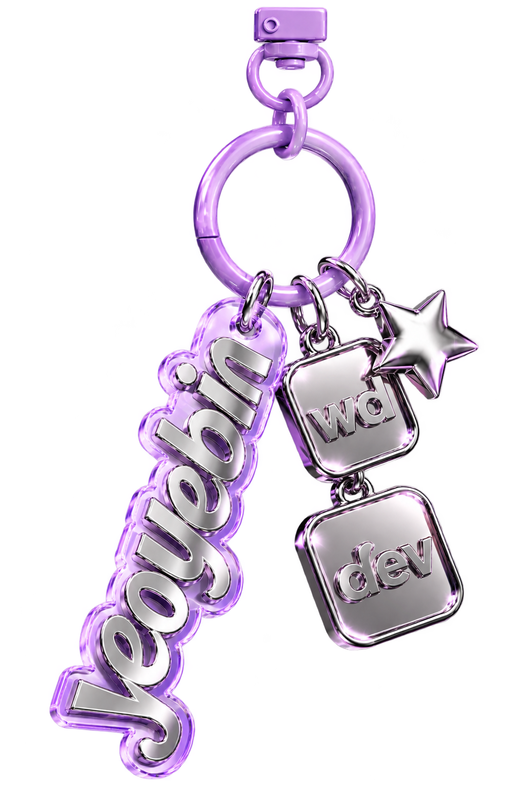

Keyring Motion · Clean Version
원본 PNG 그대로 · 잘림 없는 고화질 미리보기

이 버전은 이미지 손상을 막기 위해 전체를 부드럽게 흔듭니다. 장식별 독립 움직임은 정교한 레이어 복원 작업이 추가로 필요합니다.
원본 PNG 그대로 · 잘림 없는 고화질 미리보기

이 버전은 이미지 손상을 막기 위해 전체를 부드럽게 흔듭니다. 장식별 독립 움직임은 정교한 레이어 복원 작업이 추가로 필요합니다.